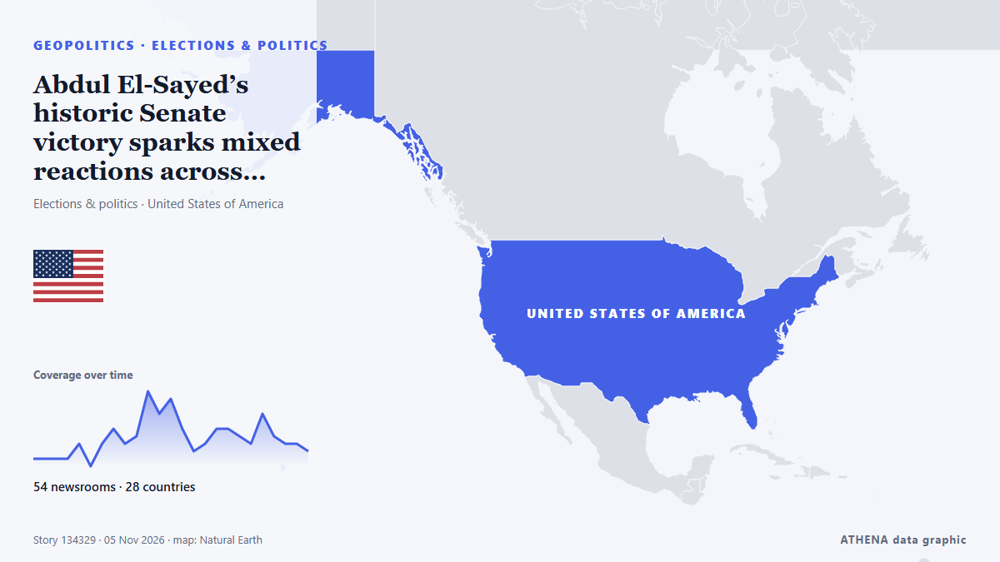

Abdul El-Sayed’s historic Senate victory sparks mixed reactions across Egypt, the Middle East

With New Hampshire and Georgia staying in Democratic hands, Republicans now look to Michigan for a pickup, where Democrat Abdul El-Sayed is competing with Republican Mike Rogers. from France 24 English
Reported independently by 63 outlets in 29 countries since 3 Nov, first by Rolling Stone; coverage is fading. ATHENA rates the risk elevated (4.1/10), driven mainly by the severity of the harm described and its geographic and sector reach. Confidence is 89% (high), with 63 independent outlets corroborating it and an average source reliability of 74%. Newsrooms by country: United States (13), France (7), Singapore (3). Coverage: 3 Nov to 4 Nov, 22 hours.
Why it matters: Security and diplomatic developments can shift alliances, trade and markets well beyond the countries directly involved.
What changed: 48 new reports from 35 newsrooms in the 24 hours to 5 Nov.
First reported as: Midterms: Abdul El-Sayed, Mike Rogers face off for Michigan Senate seat
At a glance
Selected, scored and written by ATHENA's published methodology. No editor intervenes in individual events. How this is produced ›
| 03 Nov 18:30 UTC | 1 |
|---|---|
| 03 Nov 20:30 UTC | 1 |
| 03 Nov 22:30 UTC | 1 |
| 04 Nov 00:30 UTC | 1 |
| 04 Nov 02:30 UTC | 4 |
| 04 Nov 04:30 UTC | 1 |
| 04 Nov 06:30 UTC | 4 |
| 04 Nov 08:30 UTC | 5 |
| 04 Nov 10:30 UTC | 4 |
| 04 Nov 12:30 UTC | 5 |
| 04 Nov 14:30 UTC | 11 |
| 04 Nov 16:30 UTC | 8 |
| 04 Nov 18:30 UTC | 9 |
| 04 Nov 20:30 UTC | 5 |
| 04 Nov 22:30 UTC | 2 |
| 05 Nov 00:30 UTC | 3 |
| 05 Nov 02:30 UTC | 5 |
| 05 Nov 04:30 UTC | 5 |
| 05 Nov 06:30 UTC | 4 |
| 05 Nov 08:30 UTC | 3 |
| 05 Nov 10:30 UTC | 7 |
| 05 Nov 12:30 UTC | 4 |
| 05 Nov 14:30 UTC | 4 |
| 05 Nov 16:30 UTC | 3 |
| 05 Nov 18:30 UTC | 6 |
| 05 Nov 20:30 UTC | 2 |
| 05 Nov 22:30 UTC | 1 |
Why these numbers
Importance
Risk
Confidence
The reporting — who reported it, and when
headline as published · opens the original- Rolling Stone · United StatesCan Dems Actually Win the Senate? Here’s a State-by-State Guide
- The Hill · United StatesSullivan campaign, NRSC form 'recount fund' for Alaska Senate race
- The Straits Times · SingaporeUS midterms: Alaska Republican Dan Sullivan accuses Democrats of planting ‘decoy’ Daniel J. Sullivan
- The Daily Star — page reader · BangladeshAlaskan in tight Senate race accuses Dems of 'election cheating'
- France 24 English · FranceMidterms: Abdul El-Sayed, Mike Rogers face off for Michigan Senate seat
- PBS NewsHour · United StatesMaryland voters pass Democratic-backed redistricting amendment
- The Independent · United KingdomCNN nails election night with gas prices highlighted on ‘magic wall’ during midterms returns
- Gothamist (New York City) · United StatesRepublican Jeff Van Drew concedes NJ congressional seat in surprise victory for Democrats
- NPR · United StatesOn a historic night for democratic socialists, Mamdani says midterms show power of working-class voters
- The Hill · United StatesForstag flips Montana House seat, beating Trump-backed opponent
- NPR · United StatesRepublicans tried to gerrymander their way out of big congressional losses. It didn't work
- France 24 English · FranceMidterms: What impact did redistricting in California and Texas have?
- Khaama Press · AfghanistanAbdul El-Sayed Wins Michigan Senate Race, Becomes First Muslim US Senator
- France 24 English · France'The mood got better and better as the night went on': Dems celebrate midterms victory
- The Canadian Press (via CityNews) · CanadaDemocrats deliver a stunning rout in Texas to retake power for the first time in decades
- France 24 English · FranceAbdul El-Sayed set to become first Muslim senator after win in Michigan
- France 24 English · France'A generational win' for Dems as blue wave sweeps midterms
- Ship.Energy · INTClimate NGOs hope Democrats’ US midterm victory could spark breakthrough on IMO’s NZF
- The New Arab · INTPalestinian-American Rashida Tlaib wins re-election in Michigan
- Premium Times · NigeriaHistory in US as Americans elect first Muslim, native American senators, other firsts too
- The Straits Times · Singapore'A mandate for change': Democrats remake Texas politics in election rout
- Egyptian Streets · EgyptEgyptian-American Abdul El-Sayed Wins Michigan Senate Seat, Becoming First Muslim Senator
- Montana Free Press · United StatesAP calls it: Democrat Sam Forstag defeats Flint in Western House flip
- CommonDreams · United StatesYouth Vote Delivers Historic Victories in Michigan and Nationwide
- Euronews English · France'A feeling of redemption': Young voters in Maine hail Democratic victory
- TASS (English) · RussiaDemocratic win and Trump’s reaction to outcome of midterm Congressional election
- Aravot (English) · ArmeniaAbdul El-Sayed Wins Michigan Senate Race
- Türkiye Today · TurkeyUS midterms redraw the map of power in Washington
- Euractiv · BelgiumCommission keeps digital tax proposal alive
- Indian Express · IndiaFrom El-Sayed to ‘mini Mamdanis’: US midterm 2026 wins deepen Netanyahu’s political troubles
- Times of India · IndiaTrump loses war at home: Democrats storm red bastions, seize both House and Senate
- The Independent · United KingdomSky News reporter responds after heated El-Sayed confrontation: ‘Disappointing’
- Mehr News (English) · IranTrump’s economic plan against Iran backfired: Hemmati
- Rolling Stone · United StatesFrom ‘Talafreako’ Tees to Anti-Trump Towels, Etsy Sellers Celebrate Democrats’ Midterm Win With New Merch
- Al Jazeera English · QatarDemocratic voters celebrate El-Sayed’s Michigan win in election ‘blue wave’
- The Hollywood Reporter · United StatesWhat Abdul El-Sayed’s Wild, Historic Ride to the Senate Means to One Michigander
- Billboard · United StatesThe Chicks Celebrate Democrats’ Historic ‘Blunami’ Midterm Election Victory With Two-Word Message to President: ‘F–k Trump’
- France 24 English · FranceTale of 2 midterms: Republican redistricting 'backfired' while Democrats 'exceeded all expectations'
- CNBC World · United StatesWhat Republicans' huge loss means for Trump
- The Straits Times · SingaporeUS midterms: El-Sayed’s Senate win hailed by Egypt’s prominent figures but snubbed by state media